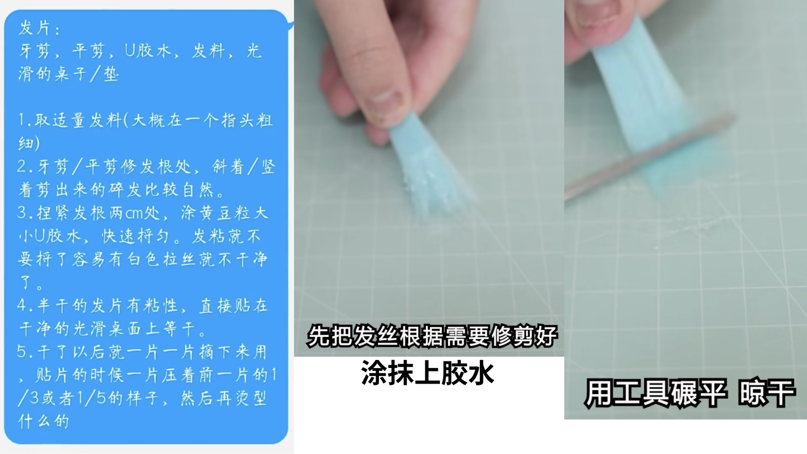
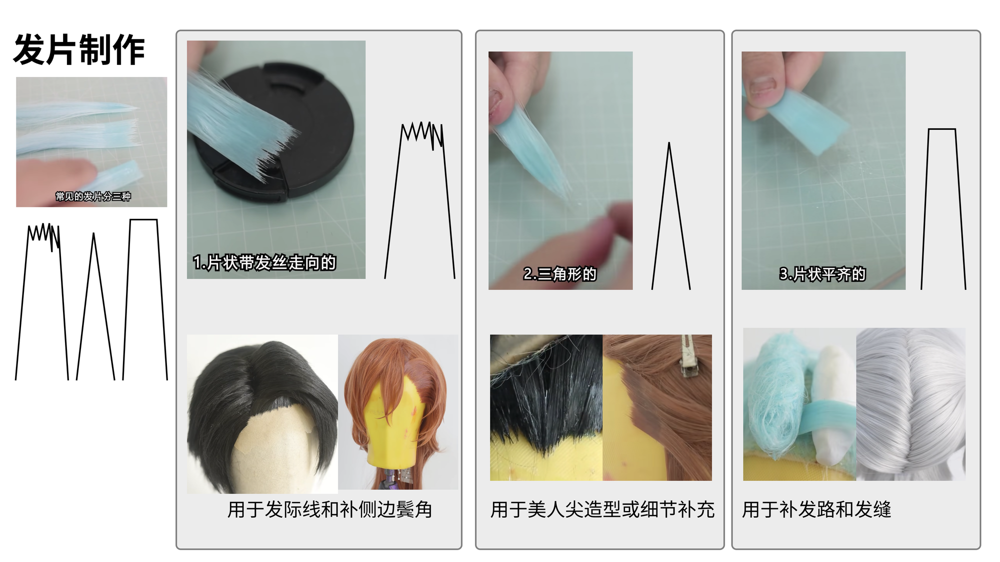
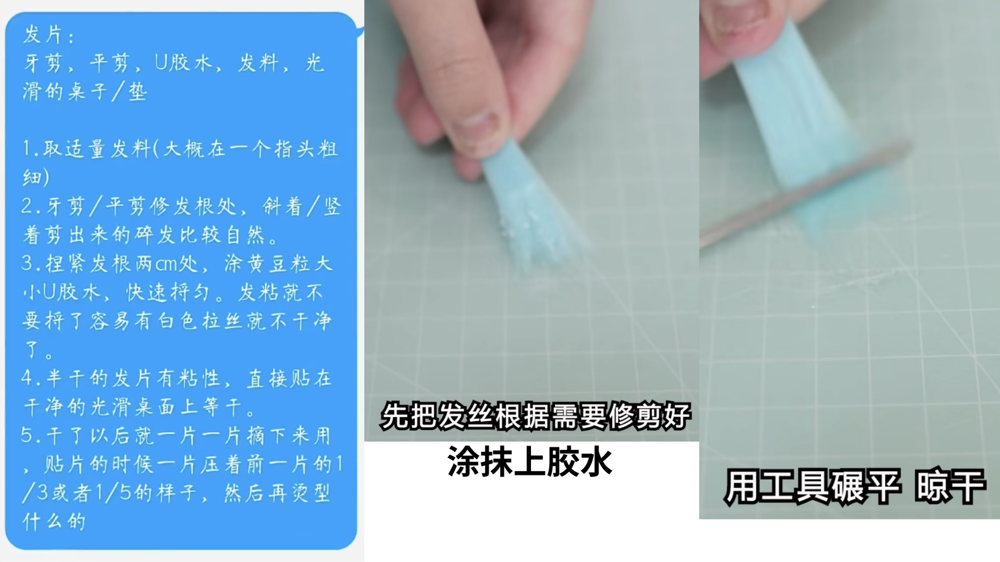
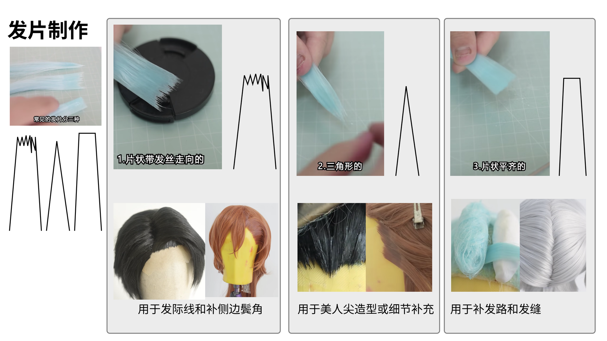

参考资料：假发造型
资料整理：@AlienHo 📒 notion 笔记
所需物料
- 假发“毛胚”
- 头模（可能需要手动加大尺寸）
- 尖尾梳
- 牙剪、剪刀
- 玉米须夹板、直板夹或卷发棒
- U 胶
- 发蜡/定型喷雾
修建定型假发“毛胚”
制作发片
 
- 发片制作+用途 贴片如何才能自然？|假发造型基础技巧 毛娘基础课（2）- bilibili
- 不同的假发发片制作方法及用途介绍教程，新手毛娘和打算自己做造型的宝子建议看完 - 半雨造型 - bilibili
资料整理：@AlienHo 📒 notion 笔记
 